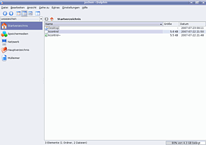
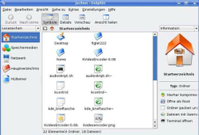
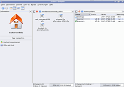

D3lphin
Archivierte Anleitung
Dieser Artikel wurde archiviert, da er - oder Teile daraus - nur noch unter einer älteren Ubuntu-Version nutzbar ist. Diese Anleitung wird vom Wiki-Team weder auf Richtigkeit überprüft noch anderweitig gepflegt. Zusätzlich wurde der Artikel für weitere Änderungen gesperrt.
Hinweis:
Dieser Artikel beschreibt die Rückportierung des Programms Dolphin der KDE 4 auf KDE 3.5.
Zum Verständnis dieses Artikels sind folgende Seiten hilfreich:
Dolphin  ist ein schneller und schlanker Dateimanager des KDE-Projekts . In KDE4 hat Dolphin Konqueror als Dateimanager abgelöst und auch in Kubuntu Hardy Heron ist Dolphin bereits unter KDE3 der Standard-Dateimanager (vgl. Spezifikation ).
ist ein schneller und schlanker Dateimanager des KDE-Projekts . In KDE4 hat Dolphin Konqueror als Dateimanager abgelöst und auch in Kubuntu Hardy Heron ist Dolphin bereits unter KDE3 der Standard-Dateimanager (vgl. Spezifikation ).
Einige Funktionen und Merkmale von Dolphin sind:
Ansicht wird für jeden Ordner individuell gespeichert
geteilte Ansicht möglich
Undo / Redo
Netzwerkdienste werden wie Dateien / Verzeichnisse gehandhabt
Installation¶
Dolphin ist der Standard-Dateimanager von Kubuntu Hardy Heron. Konqueror steht aber nach wie vor zur Verfügung.
Benutzung¶
 Dolphin wird über "K-Menü -> System -> Dolphin" gestartet.
Nach dem Start präsentiert sich Dolphin mit einer schlichten und funktionalen Oberfläche, die verschiedene Ansichten und Möglichkeiten bietet. Diese werden im Folgenden beschrieben.
Ansicht¶
Die Ansicht lässt sich über die entsprechenden Symbole oder das Menü "Ansicht" einstellen. Man kann für verschiedene Ordner verschiedene Ansichten einstellen. Dolphin speichert diese und stellt die entsprechenden Ordner immer dementsprechend dar.
Wie bereits erwähnt beherrscht Dolphin auch die zweigeteilte Ansicht, d.h. es können zwei Verzeichnisse nebeneinander dargestellt werden. Diese Ansicht erreicht man über das entsprechende Symbol, den Menüpunkt "Ansicht -> Teile Ansicht" oder F10 .
Über "Extras -> Zeige Filterleiste" lässt sich zusätzlich im unteren Bildschirmbereich eine Filterleiste einblenden.
Navigation¶
| Verschiedene Ansichten | |
| Standardansicht (Gutsy) | Geteilte Ansicht (Feisty) |
|  |  |
Im linken Teil des Fensters sieht man die sogenannten "Lesezeichen". Dies sind die wichtigsten Orte wie Homeverzeichnis, Speichermedien (=eingebundene Laufwerke), Netzwerkdienste, das Hauptverzeichnis (=Root des Dateisystems) und der Mülleimer, die man so direkt anspringen kann. Möchte man weitere, eigene Lesezeichen hinzufügen, so klickt man mit der rechten Maustaste in einen freien Bereich in diesem Fenster und wählt "Lesezeichen hinzufügen..." aus.
Im Auswahlmenü oberhalb des linken Fensters kann man alternativ zur Voreinstellung "Lesezeichen" auch auf "Informationen" umschalten. Fährt man mit dem Mauszeiger über ein Dateisymbol, so werden jetzt im linken Fenster Informationen zur Datei angezeigt (z.B. die Dateigröße). Des weiteren gibt es - je nach Dateityp - weitere mögliche Aktionen wie "Öffnen als Root", "Hierher komprimieren" oder "Verschicken als Anhang...".
In der Voreinstellung ist eine dreigeteilte Ansicht eingestellt, sodass in der Mitte die Anzeige der Dateien, rechts und rechts "Informationen" zu sehen sind.
Die Navigation durch die Dateien und Verzeichnisse kann entweder per Mausklick erfolgen, über das Menü "Gehe zu" oder über Tastenkombinationen (wie im Menü "Gehe zu" angezeigt). Man kann aber auch Pfade direkt eingeben, indem man auf das entsprechende Symbol klickt, so dass die Zeile mit dem aktuellen Pfad editiert werden kann. Hier kann man den gewünschten Pfad direkt eingeben, wobei Dolphin während der Eingabe die existierenden Unterverzeichnisse direkt anzeigt. Diese können auch mit der Maus oder den Pfeil-Tasten und ⏎ direkt ausgewählt werden.
Dateioperationen¶
Als Dateimanager beherrscht Dolphin natürlich auch die üblichen Dateioperationen wie Umbenennen, Kopieren etc. Diese sind per Rechtsklick auf die entsprechende Datei erreichbar, oder in Teilen auch im Menü verfügbar.
In der Zwei-Fenster Ansicht beherrscht Dolphin auch Verschieben und Kopieren per Drag & Drop. Zieht man eine Datei ins andere Fenster, so wird man gefragt, ob die Datei kopiert, verschoben oder verlinkt werden soll.
Dolphin beherrscht dabei auch Undo und Redo, d.h. Dateioperationen können rückgängig gemacht werden. Die Undo / Redo Funktion ist über "Bearbeiten -> Undo" bzw. "Bearbeiten -> Redo" oder über Strg + Z (Undo) bzw. Strg + ⇧ + Z (Redo) erreichbar.
Weitere Einstellmöglichkeiten¶
Im Menü "Einstellungen" findet man vier weitere Menüpunkte, über die das Aussehen und Verhalten von Dolphin den eigenen Bedürfnissen und Wünschen entsprechend angepasst werden kann. Unter anderem ist es z.B. möglich, hier auch eigene Tastenkombinationen festzulegen.
Anmerkung zu KDE 3 / KDE 4¶
Die Dolphin-Version in Hardy ist nicht identisch mit der Dolphin-Version für KDE4, die über weit mehr Funktionen verfügt, wie etwa eine Baumansicht, fortgeschrittene Sortierfunktionen und eine Anbindung an den semantischen Desktop. Unter Hardy läuft vielmehr ein Fork der alten KDE3-Version, die zur besseren Unterscheidung D3lphin genannt wird (in der Version 0.9.2). D3lphin Webseite
Unter Kubuntu 8.04 in der KDE4 Version läuft Dolphin in der KDE4-Variante (Version 1.0.X).
Problemlösungen¶
Bedienoberfläche nur noch englisch? Siehe Forumsthread
- Erstellt mit Inyoka
-
 2004 – 2017 ubuntuusers.de • Einige Rechte vorbehalten
2004 – 2017 ubuntuusers.de • Einige Rechte vorbehalten
Lizenz • Kontakt • Datenschutz • Impressum • Serverstatus -
Serverhousing gespendet von